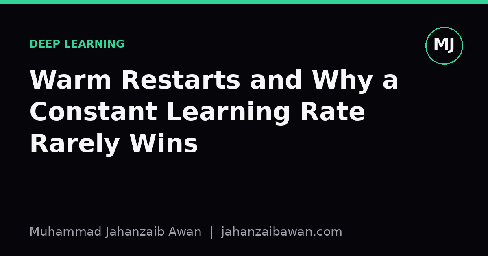

Warm Restarts and Why a Constant Learning Rate Rarely Wins
A look at why scheduling the learning rate, including cosine annealing with warm restarts, tends to beat a fixed rate for training deep networks reliably.

The problem with picking one number
When I first trained neural networks properly, I treated the learning rate as a single scalar to tune once and leave alone. It felt tidy: pick a value, run the training loop, watch the loss curve. The trouble is that a constant learning rate asks one number to do two contradictory jobs. Early in training, you want large steps so the model can move quickly across the loss surface and escape a poor initialisation. Late in training, you want small steps so the model can settle into a narrow minimum without overshooting it. A single fixed value is a compromise between these needs, and compromises rarely win outright.
Consider a concrete case: training a convolutional network for image classification with a constant learning rate of 0.1. Early on, that rate is often exactly right, loss drops fast over the first few epochs. But by epoch 30 or 40, the same rate that was helpful is now too aggressive. The parameters oscillate around a good region instead of converging into it, and validation accuracy plateaus or wobbles rather than improving smoothly. Drop the rate to 0.001 instead and you get the opposite problem: stable but painfully slow progress in the early epochs, wasting compute before the model has even found a sensible region of parameter space.
This tension is why almost every serious training recipe uses some form of schedule rather than a fixed value. The schedule is not a cosmetic detail, it is doing real optimisation work: exploring aggressively when exploration is cheap, then refining carefully when refinement is what matters.
Decay is the obvious fix, warm restarts go further
The simplest schedules just decay the rate over time: step decay, where you multiply the rate by 0.1 every few epochs, or cosine annealing, where the rate follows a smooth cosine curve down to near zero by the end of training. Both address the core problem directly, large steps early, small steps late, without you having to guess a single fixed number that works everywhere. In my own experiments, replacing a constant rate with cosine annealing over the same total number of epochs has reliably produced lower final validation loss for no extra compute cost, simply because the schedule matches the rate to what the optimisation actually needs at each stage.
Warm restarts push this idea further. Instead of decaying the rate once and leaving it near zero, you decay it over a shorter cycle, then jump it back up to a high value and decay again, repeating this several times across training. A typical setup might use cycles of 10 epochs each, cosine-annealing the rate from 0.1 down to near zero within each cycle, then restarting at 0.1 for the next cycle. It sounds counterintuitive: why deliberately reintroduce large, disruptive steps after the model has just settled into a good region?
The intuition is that loss surfaces in deep learning are not single smooth bowls, they have many local minima of varying quality, connected by ridges and flat regions. A model that has settled into a mediocre minimum after one decay cycle can, with a sudden jump back to a high learning rate, be kicked out of that minimum and given the chance to explore further and land somewhere better. Each restart is a fresh opportunity to search, while the decay within each cycle still gives the model a chance to converge and consolidate whatever it finds. Over several cycles, this tends to produce solutions that generalise slightly better than a single long decay, because the model has effectively sampled several candidate minima rather than committing early to the first reasonable one it found.

Why this matters beyond the loss curve
The practical benefit is not just a marginally lower training loss, it is about model generalisation and about using compute sensibly. Sharp, narrow minima in the loss landscape are associated with worse generalisation than wide, flat ones, because small shifts between training and test distributions can move you badly off a sharp minimum but leave you fine on a wide one. Warm restarts, by periodically jolting the parameters with a large step, tend to bias the search away from narrow minima that a plain monotonic decay might settle into and never leave. You are not just optimising the training loss faster, you are shaping which kind of solution you end up with.
There is also a compute argument. Suppose you have a fixed budget of 40 epochs. With a single decay schedule, you get one attempt at finding a good minimum, and if the model gets stuck in a mediocre region halfway through, you have no mechanism to escape it within that budget. With four restart cycles of 10 epochs each, you effectively get four attempts within the same budget, and you can simply keep the parameters from whichever cycle produced the best validation performance. This is a meaningful reframing: the schedule is not just tuning speed, it is turning a single optimisation run into several cheap, related attempts.
None of this removes the need for careful evaluation. If you are comparing a constant rate against a warm-restart schedule, use the same data splits, the same number of total epochs or an honestly matched compute budget, and report validation performance at the point you would actually have stopped training, not a cherry-picked epoch. Schedules can look better simply because they were given more effective tuning attention, so the comparison has to be fair to be worth trusting.
Practical takeaway
If you are still defaulting to a constant learning rate, the fix is cheap and almost always worth it. Start with cosine annealing over your full training budget as a baseline improvement, then experiment with warm restarts using a handful of cycles if you have the epochs to spare and want a chance at escaping mediocre minima. Track validation performance per cycle rather than just final training loss, and keep whichever checkpoint actually generalises best. The point is not that any one schedule is universally optimal, it is that treating the learning rate as fixed throughout training gives up an easy and reliable source of improvement for almost no extra cost.